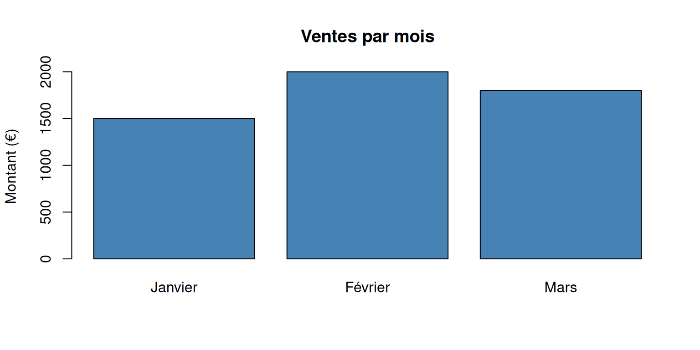
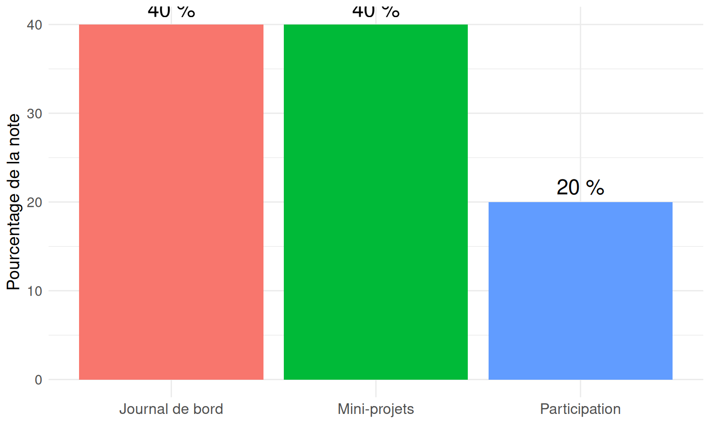

# Créer une liste de notes
notes <- c(15, 12, 18, 14, 16, 13, 17)
# Calculer la moyenne
moyenne <- mean(notes)
# Afficher le résultat
print(paste("La moyenne est :", moyenne))[1] "La moyenne est : 15"Apprendre la Programmation (en R) avec les LLMs
🤖 LLM = Votre Assistant
LLM : Large Language Model, aussi connu sous le nom d’IA générative
Ex : ChatGPT, Claude, Mistral, etc.
📊 R = Langage Statistique
Pour analyser, visualiser, calculer
🎯 Objectif = Collaboration
Programmer AVEC l’IA générative intelligemment
Levez la main si vous avez déjà (Pas de jugement ! 😊)…
Objectif : Autonomie et esprit critique
Ici, demander des exemples de ce qu’ils font
"Fais-moi des statistiques sur mes données""J'ai 10 notes d'étudiants :
12, 15, 18, 14, 16, 13, 17, 11, 19, 15.
Calcule la moyenne, médiane et l'écart-type
en R avec des commentaires explicatifs."Résultat : Code précis et commenté !
Proposer aux étudiants de le faire eux-même. Commencez par le prompt 1, puis les amener au prompt 2 en formalisant un peu le problème.
# Créer une liste de notes
notes <- c(15, 12, 18, 14, 16, 13, 17)
# Calculer la moyenne
moyenne <- mean(notes)
# Afficher le résultat
print(paste("La moyenne est :", moyenne))[1] "La moyenne est : 15"C’est tout ! Pas si compliqué, non ? 😊
Votre demande (à votre LLM préféré)
"J'ai des données de vente par mois :
Janvier : 1500€, Février : 2000€, Mars : 1800€
Crée un graphique en barres avec R"Essayez !
# Données de vente
mois <- c("Janvier", "Février", "Mars")
ventes <- c(1500, 2000, 1800)
# Créer le graphique
barplot(ventes, names.arg = mois,
main = "Ventes par mois",
ylab = "Montant (€)")# Testons le code !
mois <- c("Janvier", "Février", "Mars")
ventes <- c(1500, 2000, 1800)
barplot(ventes, names.arg = mois,
main = "Ventes par mois",
ylab = "Montant (€)",
col = "steelblue")
Principe pédagogique : Les erreurs sont des occasions d’apprentissage, pas des échecs !
Le cours est structuré en 3 phases progressives sur 8 séances de 3h.
Objectif : Maîtriser le dialogue avec un LLM et les concepts R de base
if/else)for, while)Objectif : Analyser de vraies données en autonomie
Objectif : Devenir autonome et collaborer efficacement
dplyr, lubridate)À la fin du cours, vous serez capable de : analyser des données en autonomie, créer vos propres outils, automatiser vos analyses, collaborer sur du code, et utiliser les LLMs comme de véritables partenaires de travail.
30-60 min
90-120 min
30 min
Cours noté : L’objectif est d’évaluer votre progression, pas de vous piéger !
Votre note finale est répartie en 3 composantes :

Document votre apprentissage tout au long du semestre.
Pour chaque séance, notez :
Documentez vos échecs comme vos réussites. C’est votre progression qui compte.
Rendus de fin de séance à soumettre sur Moodle.
Critères : Code fonctionnel, commenté, résout le problème posé
Votre engagement pendant les séances.
La participation, ce n’est pas parler beaucoup, c’est être engagé dans votre apprentissage.
Quelles sont vos questions ? 🤔
Pas de question bête ! Nous sommes tous là pour apprendre ensemble 😊
N’oubliez pas : l’erreur est votre amie ! 😊
📚 Apprenez
🔍 Explorez
🎉 Réussissez
Comment utilisez-vous des LLMs ?